РОССИЯНАМ О
ТВОРЧЕСТВЕ BEEFХАРТА
Некоторые сведения о незаслуженно малоизвестном у нас
музыканте (и не только) по прозвищу КЭПТЭН БИФХАРТ
RAЗDЕЛ "ПЕРВОSTATЕЙНЫЙ"
Нижеследующая статья была написана в марте-апреле
2001-го, некоторые изменения внесены летом того же года; последние дополнения
- летом 2002-го (информация о ранее недоступном автору альбоме "Strictly
Personal"). Она не является перепечаткой откуда-либо или переводом - это,
если так можно выразиться, оригинальный материал. Наверняка здесь упущены или
искажены некоторые детали. Пожалуй, это не так уж страшно. Бифхарт - вполне
подходящий кандидат на звание человека-легенды, мифа - а миф каждый рассказывает
по-своему. Поэтому - что есть, то есть.
"Человека в зеркале" (в более сжатом варианте)
вроде как планировал опубликовать питерский журнал "Фузз". В результате невразумительных
и не особо приятных переговоров с его редакцией, продолжавшихся в течение двух
месяцев, статья не была напечатана - по решению автора. Именно из-за невразумительности,
длительности и, в итоге, неприятности сих переговоров. А также по причине несходства
взглядов автора и "Фузз'а" на оплату авторского труда. Кроме того, ещё несколько
музыкальных изданий ответили отписками на предложение этого материала. Бог с
ними.
Летом 2001-го статья увидела свет в интернете
в "Результатах" Андрея Турусинова, но буквально через несколько недель
сайт перестал работать... и возобновил свою деятельность только в феврале 2003
года. Сейчас в
"Журнале
нечеловеческой музыки "Результаты-online" размещена первая редакция
данной статьи
и
подробной
дискографии Бифхарта и MAGIC BAND. А осенью 2003-го вышел (небольшим тиражом,
"только для своих") 11-й номер "Результатов на бумаге",
содержащий среди прочего "Человека в зеркале" и дискографию. Таким
образом статья всё-таки появилась и в печатном варианте.
Да, вот ещё что. Если кому-либо покажется,
что я испытываю неприязнь к BEATLES или, скажем, к Эрику Клэптону - это совсем
не так. Просто я не считаю их лучшей группой, а его - лучшим блюзменом. Если
я невольно задел чьи-то музыкальные пристрастия, прошу меня простить. Вкусы-то
у всех разные...
Содержание:
- ВСТУПЛЕНИЕ. Вундеркинд. Мохави. Заппа. 1964-66: образование
MAGIC BAND, синглы.
- 1967-68: "Safe As Milk", "The Mirror Man [Brown
Wrapper] sessions", "Strictly Personal".
- 1969-70: "Trout Mask Replica", "Lick My Decals
Off, Baby".
- 1971-74: "The Spotlight Kid", "Clear Spot",
"Unconditionally Guaranteed", "Bluejeans And Moonbeams".
- 1975-80: "Bongo Fury", "original Bat Chain
Puller", "Shiny Beast (B.C.P.)", "Doc At The Radar Station".
- 1981-82: "Ice Cream For Crow". Живописец. ЗАКЛЮЧЕНИЕ.
К.Узник
ЧЕЛОВЕК В ЗЕРКАЛЕ
ПУТЕШЕСТВИЕ КАПИТАНА БЫЧЬЕ СЕРДЦЕ ИЗ ПУСТЫНИ В ПУСТЫНЮ
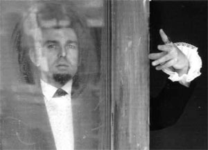
Время
так или иначе переоценивает наши ценности. С его течением многие герои прошлого
меркнут и перестают казаться таковыми. Другие вдруг становятся героями уже для
новых поколений. Пошумевшая и заглохшая эпоха шестидесятых нет-нет и одарит
живущих лет на тридцать позже очередным "сумасшедшим бриллиантом". Да таким,
что задумаешься - а герои ли многие из нынешних героев? Уже прокатилась в девяностых
по миру волна повышенного интереса к THE DOORS, ранним ROLLING STONES и раннему
KING CRIMSON. Вынырнули, словно из небытия, мало кому нужные в своё время VELVET
UNDERGROUND, THE STOOGES, CAN. Большинство наших эстетов-семидесятников, поклонников
"волосатой" эпохи, проморгавших немало зёрен среди плевел и наоборот, имеет
на своей совести, оказывается, ещё одного упущенного "кита". Да какого! Впрочем,
их западные "сверстники" (то бишь тамошние шестидесятники), да и последующие
поколения любителей панка, новой волны, экстремальщины и прочего прогрессива
недалеко от них ушли в этом вопросе… Сей "кит" - глыба, матёрый человечище,
самобытнейший Дон Ван Влит, больше известный в музыкальной среде как Кэптэн
Бифхарт. На Западе, между тем, уже одумываются. "Кэптэн Бифхарт - один из важнейших
музыкантов, взошедших в 60-е, гораздо более значительный и достигший гораздо
большего, чем BEATLES; он так же важен для всей музыки, как Орнетт Коулмэн для
джаза, как Ледбелли для блюза" (Лестер Бэнгс, журналист "Роллинг Стоун"). Так-то.
Не пора ли и нам восполнить пробел?
Впервые я услышал музыку Кэптэна Бифхарта (Captain
Beefheart, что означает "Капитан Бычье Сердце") году эдак в девяносто втором.
Как обладатель некой англоязычной "Иллюстрированной истории рок-музыки" (автор
- Джереми Паскаль, переработанное издание 1984 года) я знал, что примерно во
времена расцвета всяческих хиппи существовал в Калифорнии человек по имени Дон
Ван Влит (Don Van Vliet), обладавший этим запоминающимся прозвищем. С фотографии глядел мужчина лет сорока на вид, с одутловатым ("бычьим"?) лицом
и пучком волос на подбородке. Подпись гласила: "Кэптэн Бифхарт, родившийся с
менее интригующим именем Дон Ван Влит и раздвинувший границы рок-н-ролла". Больше
сведений не было…
Это был двойной альбом 1969 года "Trout Mask
Replica". Его мне записали практически случайно, через третьи руки. Если не
изменяет память, дослушать до конца с первого раза у меня не получилось. Но
некоторым образом зацепило. Как-то спонтанно я обозвал услышанное "панк-джазом",
и спустя годы оказалось, что в этой оценке я не одинок. "Сочетание блюза, фри-джаза
и рок-н-ролла" - так классифицировали это звучание многие критики и поклонники.
Некоторые упоминали тут же "академических модернистов"
Игоря
Стравинского и
Чарльза
Айвза. Ещё один постоянный эпитет - "прото-панк" (в отличие от постпанка,
который был "после", протопанк был "перед" - типа предок).
Не пугайтесь. При таком
обилии упоминающихся стилей, Бифхарт отнюдь не эклектичен. Он совершенно цельный
художник (не побоюсь этого слова), создавший свой особый звук, свою эстетику,
свою (и этого слова не побоюсь) философию. Но - забегаю вперёд…
Возвращаюсь в тот же девяносто второй (ничего,
что я всё о себе?). В те времена я был - и остался - поклонником ещё одного
достаточно сумасшедшего музыканта по имени
Том
Уэйтс. Так вот, другое определение Бифхарта с моей стороны звучало так:
он - "радикальный (или экстремальный) Том Уэйтс"; либо Уэйтс - это в некоторой
степени "облегчённый (для восприятия), более мелодичный Бифхарт". Это ни в коем
случае не должно казаться камнем в огород дяди Тома. Но своей здоровой ненормальностью,
потрясающим пониманием чёрного блюза (оба - белые), непредсказуемостью и, что
интересно, манерой пения они волей-неволей напоминают друг друга. Бифхарт родился
и начал музицировать раньше. Итак…
Дональд Глен Влит - именно так (а не Влиет
и уж тем более не Влайет) произносится эта голландская по своим корням фамилия
- появился на свет 15 января 1941 года в Глендэйле (пригороде Лос-Анджелеса),
штат Калифорния, в семье водителя грузовика. С раннего детства занимался скульптурой.
По одной из легенд, когда Дону было четыре года, его работы привлекли внимание
португальского скульптора Аугустино Родригеса, и ребёнок был провозглашён вундеркиндом.
В возрасте тринадцати лет его приглашают учиться в Европу, но родители отвечают
отказом. Вскоре семья переезжает в забытый Богом городок Ланкастер. Он расположен
на краю Мохави Десэт (Mojave Desert, т.е. "пустыня Мохави") - удалённого от
океана района Калифорнии. Примерно в 1958 году, учась в колледже, Дон знакомится
- как вы думаете с кем? - со своим ровесником
Фрэнком
Заппой. В то время Влит активно слушал два сорта музыки:
блюз
дельты Миссисипи и
"новый"
джаз -
Джона Колтрэйна,
Орнетта Коулмэна,
Сесила Тэйлора
и прочих. Видимо, на этой почве они и сошлись.

Дон
тогда самостоятельно учился играть на губной гармонике, Фрэнк уже несколько
лет состоял в различных школьных ансамблях - причём его инструментом была вовсе
не гитара, а ударная установка. В период 1958-64 годов два приятеля (и вместе
и порознь) поучаствовали в нескольких ритм-энд-блюзовых коллективах - THE BLACKOUTS,
THE OMENS, THE SOOTS. Фрэнк со временем перешёл на гитару, а Дон поигрывал на
гармонике и пел в духе
Хаулина
Вулфа - причём часто был не единственным вокалистом. Позже Заппа утверждал,
что Влит обладал очень интересным голосом, но имел проблемы с ритмом - не мог
"попасть" в нужный размер. А может быть, просто не хотел? Может быть, искал
свой, особый ритм?.. Надо заметить, что Дон вовсе не расстался с изобразительным
искусством - параллельно с музыкой он занимается живописью (этакий экспрессионизм-примитивизм).
Вообще эта пустынная земля была щедра талантами. Многие музыканты из тех групп
и тех мест сотрудничали с Заппой и Влитом и позднее - в период их расцвета.
В 1964 году друзья решили снять задуманный Фрэнком фильм с названием "Капитан
Бычье Сердце против хрюкающего народа" ("Captain Beefheart Versus Grunt People").
Само выражение "beef heart" было в ходу у одного из родственников Влита; в сценарии,
помимо персонажа по прозвищу Кэптэн Бифхарт (причём, его называли Донни!), фигурировали
некие Глен и Сью (так же звали родителей Дона, отношения с которыми у последнего
были весьма натянутыми). С фильмом ничего не вышло, и Заппа отправился в Лос-Анджелес,
где вскоре основал группу MOTHERS OF INVENTION, а Влит взял себе псевдоним Кэптэн
Бифхарт и обратил взор в родные пенаты…
И вот зимой 1964-65 годов всё в том же Ланкастере
рождается один из интереснейших проектов в истории современной музыки -
CAPTAIN
BEEFHEART & HIS MAGIC BAND. Название сохранится вплоть до окончания музыкальной
деятельности Бифхарта, чего нельзя сказать о составе. Это вообще отдельная история.
Состав непрерывно менялся. Только в качестве более-менее
постоянных музыкантов перебывало около трёх десятков человек. Однако перемены
эти (за исключением одного эпизода, но об этом позже) происходили достаточно
плавно и органично - один ушёл, другой пришёл - и принципиально не сказывались
на звучании. MAGIC BAND всегда обладал своеобразными саундом, ритмом, мелодикой,
вклад в которые вносили все участники - под известно чьим чутким руководством.
Чутким до деспотизма… В группе нередко работало сразу - и в студии, и на сцене
- по три гитариста (кроме баса), по два барабанщика; гитаристы брались подчас
за барабаны и наоборот - и так далее. Очень многие музыканты носили прозвища,
как правило придуманные Бифхартом, иногда даже по два (нередко прозвища состояли
из двух-трёх слов), поэтому легче запомнить их по именам.
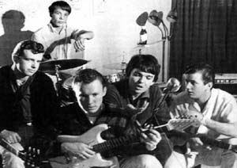
Стартовый
состав выглядел так: Джерри Хэндли (
Jerry Handley) - бас, Пол Блэйкли
(
Paul Blakely) - ударные, гитаристы Даг Мун (
Doug Moon) и - вот,
пожалуйста - Алекс Снуффер, он же Алекс Сент-Клэр, он же "Пижама" (
Alex Snouffer,
Alex (
Pyjama)
St. Claire). В отсутствие Блэйкли Снуффер переключается
на барабаны - в таких случаях на гитаре за него играет Ричард Хепнер (
Richard
Hepner). В качестве подмены в составе появляется также и барабанщик Вик
Мортенсен (
Vic Mortensen). Чуть позже (в 1966-68 годах) изредка помогает
бас-гитарист Гэри "Мэджик" Маркер (
Gary (
Magic)
Marker).
Строго говоря, инициатором создания, а поначалу - и лидером группы считался
Алекс Снуффер; но, поскольку Влит был фронтменом - и очень ярким фронтменом,
в названии отдельно фигурировал как раз его псевдоним. Алекс добавил к своему
второму имени - Клэр - приставку "Сент" и превратил его в фамилию. Дон же, присоединив
"Ван" к собственной фамилии, восстановил "историческую справедливость" - его
предки-голландцы отбросили эту частицу при переезде в Америку. Он является автором
песен, аранжировщиком, вокалистом (некоторые такой голос и манеру пения вокалом
не считают, но это их трудности; для справки - диапазон "капитанского" голоса
составлял около пяти октав), играет - и как играет! - на губной гармонике, позднее
- на саксофоне, кларнете и ещё Бог знает на чём. Впрочем, поначалу коллектив
выступает, в основном, с чужим материалом - классикой чикагского и дельта-блюза
и, возможно, несколькими хитами ROLLING STONES. Но уже в ближайшее время практически
у всех композиций, исполняемых MAGIC BAND (по крайней мере, на альбомах),
автор
будет один - Дон Ван Влит.
Вскоре группа становится
некоторым образом популярной в калифорнийских клубах, в том числе в Лос-Анжелесе
и Сан-Франциско. В 1966 году MAGIC BAND проводит несколько
сессий
на студии A&M Records, в результате чего в апреле выходит сингл "Diddy Wah
Diddy" - это версия песни
Бо Диддли/
Вилли
Диксона, на обратной стороне - "Who Do You Think You're Fooling?", вышедшая
из-под пера Бифхарта; в октябре - тоже сингл - "Moonchild"/"Frying Pan". У коллектива
появляется возможность записать полнометражный альбом. Но представленные Бифхартом
композиции руководство компании расценивает как "слишком негативные" и даёт
отказ.
Тем временем на место Блэйкли приходит барабанщик
Джон Френч (
John French) по прозвищу "Драмбо" (
Drumbo) - он будет
дольше всех сотрудничать с Ван Влитом. Чего не скажешь о присоединившемся чуть
позже гитаристе Рае Кудере (
Ry
Cooder) - он вернётся в свою группу RISING SONS вскоре после записи
первого альбома MAGIC BAND. Кудер, яркий слайд-гитарист и композитор, известен
как автор большого количества саунд-треков к фильмам (например, "Париж, Техасс"
Вима Вендерса); он вытащил "на свет божий", т.е. в Штаты и Европу, замечательный
кубинский ансамбль BUENA VISTA SOCIAL CLUB (см. одноимённый документальный фильм
того же Вендерса), участвовал в записи "Let It Bleed" группы ROLLING STONES,
выпустил множество сольных альбомов.
MAGIC BAND делает ещё несколько демо-записей
и весной 1967 года уже на фирме Buddah Records приступает к работе над первой
пластинкой. В процессе её записи остался за бортом Даг Мун. "Я держал все песни
в голове. Я знал, как они должны звучать. Когда мы пришли в студию, Дон принялся
всё менять и переделывать… Рай Кудер был студийным музыкантом. Я не был студийным
музыкантом, я был блюзовым гитаристом из пустыни, который часами заучивал свои
партии". Мун ещё запишется с Бифхартом в качестве специально приглашённого музыканта
- через пару лет.
Как бы то ни было, в июне
1967 года выходит, наконец, альбом
"Safe
As Milk" ("Безопасный, как молоко"). Двенадцать песен общей длительностью
чуть более получаса демонстрируют хороший образец "позднего" саунда
Западного побережья, типичного для тех лет - немного в духе BIG BROTHER & THE
HOLDING COMPANY, JEFFERSON AIRPLANE и иже с ними. Лишь несколько вещей, таких
как "Electricity" (она-то и была признана самой "негативной"), "Dropout
Boogie", может быть, "Plastic Factory", содержат в себе намёк на дальнейшее
новаторство коллектива. Голос Бифхарта также ещё не развернулся во всю свою
мощь. Тем не менее, альбом весьма неплох. Парочка хороших лирических тем - "Where
There's Woman", "Autumn Child", будущий концертный хит "Abba Zaba", развесёлая
"Yellow Brick Road" - всё это с удовольствием прослушивается с первой попытки,
чего не скажешь о многих других работах CAPTAIN BEEFHEART & HIS MAGIC BAND.
Очень хорошо звучит и бодрое буги "Sure 'Nuff 'N Yes, I Do" - с мелодией, как
принято считать, напоминающей "Rollin' 'N' Tumblin'"
Мадди
Уотерса. Но послушайте "Down In The Bottom" Хаулина Вулфа,
"Down South Blues" того же Мадди - при желании можно обнаружить не
один десяток подобных песен. Неблагодарное это занятие - искать оригинальную
мелодию в блюзе... В качестве соавтора большинства песен указан некто Херб Берманн
(
Herb Bermann), которого никто никогда не видел. Есть предположение,
что его выдумал Ван Влит - по крайней мере, это вполне в его духе… Первая песня
альбома начинается словами: "Я родился в пустыне…" ("I was born in the desert…").
Несколькими месяцами позже
группа делает запись , известную впоследствии как
"The
Mirror Man sessions". Здесь Кудера уже нет, вместо него играет Джефф Коттон
(
Jeff Cotton) по прозвищу "Антенни Джимми Сименс" (
Antennae
Jimmy Semens). В планах Бифхарта - создание двойного альбома с рабочим названием
"It Comes To You In A Plain Brown Wrapper" ("Это приходит к тебе в простой
коричневой упаковке"), поэтому иногда говорят
"The
Brown Wrapper sessions". Записано полтора десятка композиций, три из них
- "вживую" ("live in the studio"). По какой-то причине (возможно,
из-за неоднозначных отношений группы с продюсером, а продюсера с фирмой) "двойник"
не выпускается, а диск, названный
"Mirror
Man" ("Зеркальный человек", или "Человек-зеркало",
но мне больше нравится "Человек в зеркале"), выйдет в свет лишь несколько лет
спустя - в 1971 году. Но в дискографии Бифхарта он по праву считается вторым
альбомом. В оригинальный "Mirror Man" вошли только четыре песни из той записи
(включая все "живые"), причём общее время звучания - более пятидесяти минут!
Первая вещь - "Tarotplane" - этакий драйвовый блюз в среднем темпе, который
длится ровно девятнадцать(!) минут. Самое удивительное, что это не напрягает,
и песня с интересом слушается до конца (это, конечно, личное впечатление). В
целом, этот альбом гораздо "более блюзовый", с одной стороны, и более "завёрнутый",
с другой, нежели "Safe As Milk". Сильнее заметны и очень хороши ударные (спасибо
мистеру Драмбо), впечатляет и грубоватая бас-гитара Джерри Хэндли. Заглавная
песня и "25th Century Quacker" просто замечательны. Некоторое исключение составляет
"Kandy Korn" (единственная "нормальная" студийная) - на мой взгляд, она слегка
напоминает европейский прогрессив-рок (типа SOFT MACHINE, GONG, может быть,
CAN психоделического периода), что, может, и неплохо, но совершенно нехарактерно
для MAGIC BAND. Правда, в 1967 году не было ещё ни группы CAN, ни группы GONG,
а SOFT MACHINE ещё не выпустили ни одной пластинки… Очень интересный альбом,
на котором Бифхарт, помимо всего прочего, от души демонстрирует свою неповторимую
манеру игры на губной гармонике.
Первые две пластинки
CAPTAIN BEEFHEART & HIS MAGIC BAND неоднократно переиздавались: и по отдельности,
и в паре, и в виде компиляций из двух альбомов. В формате CD последними были
издания 1999 года:
"Safe As Milk" -
с семью и
"The Mirror Man Sessions"
(именно под таким названием) с пятью бонус-треками. В них вошли записи со студийных
сессий осени 1967 года, не попавшие в альбом "Mirror Man". Кроме того, все эти
вещи (за исключением песни "Korn Ring Finger") вышли ещё в 1992 году
на диске
"I May Be Hungry But I Sure
Ain't Weird". Ранние же записи (синглы 1966 года) увековечены на пластинке
"The Legendary A&M Sessions",
впервые выпущенной в 1984 году (1992 год - на CD). Этот мини-альбом, содержащий
пять композиций (одна из них издана впервые), высоко ценится среди поклонников.
Причём только здесь можно услышать студийную запись "первозданного" MAGIC BAND.
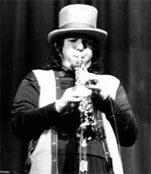
Одно
из преданий утверждает, что Ван Влит во время концертного тура в Англии весной
1968 года едва ли не впервые взял в руки саксофон - и тут же начал играть. "Я
никогда не учился играть на саксофоне. Я просто схватил его, когда мы выступали
в Лондоне, и начал дуть. Я не думал о расположении пальцев… Я играл два с половиной
часа. Просто не мог остановиться… Я не знал, где какие ноты, и горд сказать,
что не знаю этого и сейчас". Как бы то ни было, партии саксофонов и кларнетов
в "интуитивном" исполнении Бифхарта вскоре станут непременным атрибутом записей
и выступлений MAGIC BAND.
Третий диск, "Strictly
Personal" ("Строго персонально", также можно перевести как "Лично в
руки"), над которым группа работала в марте и апреле 1968 года, вышел в октябре.
За исключением песни "Ah Feel Like Ahcid", все остальные первоначально записывались
ещё осенью 1967-го во время
"The Mirror
Man [Brown Wrapper] sessions" (эта коричневая - точнее, грязно-жёлтая -
упаковка ("brown wrapper") задействована и в оформлении пластинки). Здесь тоже
не обошлось без эксцессов. Продюсер Боб Краснов (да-да,
Krasnow) свёл
альбом и запустил его в производство в отсутствие Бифхарта. При сведении он
использовал эффекты в модном тогда психоделическом духе и явно перестарался.
Музыканты были просто поставлены перед фактом. "Он собирается коммерциализировать
меня," - сказал Бифхарт, разругался с продюсером и расстался с фирмой. Интересно,
что в те годы немало групп и исполнителей, известных яркими, непредсказуемыми
концертными выступлениями, изрядно, на мой взгляд, подпортили свои записи, дорвавшись
до многоканальных студий с широкими техническими возможностями (к примеру,
Джими
Хендрикс и его "Electric Ladyland")… Сейчас существует две версии "Strictly
Personal": на виниле - с "эффектами" (или дефектами) и на CD (редакция 1994
года) - в слегка "очищенном" виде, правда, с небольшими изменениями в структуре
некоторых композиций. Среди поклонников MAGIC BAND нет единого мнения, которая
из них лучше - одни предпочитают первую, другие - вторую. Кстати говоря, "альтернативным
вариантом" этого альбома иногда называют уже упоминавшийся CD "I May Be Hungry
But I Sure Ain't Weird".
Если рассматривать "Strictly Personal" как
второй (по времени выхода в свет) альбом, это - несомненный шаг вперёд; вполне
уместно считать его промежуточным этапом между первыми записями и последовавшими
вскоре новаторскими работами. По-настоящему цельный, концептуальный альбом с
явными признаками индивидуальности, непохожести ни на кого. Не случайно для
многих поклонников со стажем он является едва ли не лучшим - ведь до этого они
слышали только первые синглы и пластинку "Safe As Milk". Очень показательна
открывающая альбом "Ah Feel Like Ahcid". Пожалуй, именно её в первую очередь
можно назвать связующим звеном между "архаичным" дельта-блюзом и откровенно
авангардной музыкой Бифхарта. Также есть превосходная вещь "Trust Us" - вот
что рассказывает о ней Джон Френч: "Однажды, когда я пришёл его навестить, он
написал "Trust Us". Это был его ответ на "We Love You" Роллингов, которая, конечно,
была их ответом на битловскую "All You Need Is Love" (которая была их ответом
на всё)". Присутствует и ироничная (если не сказать - издевательская) по названию
и содержанию песня "Beatle Bones 'N' Smokin' Stones". По отношению к громкому,
коммерческому успеху - чужому, за неимением своего - Ван Влит испытывал, как
говорят, двойственное чувство - некую смесь презрения и ревности. К примеру,
группу THE BYRDS он просто ненавидел; в то же время очень высоко оценивал творчество
Джими Хендрикса… Хороши два блюза с заметным влиянием Хаулина Вулфа: "Gimme
Dat Harp Boy" и "Son Of Mirror Man - Mere Man"; последний вполне оправдывает
своё название - это действительно сын (или брат-близнец, или часть тела) песни
"Mirror Man" с одноимённого альбома. Есть здесь и новая версия "Kandy Korn".
Всё хорошо. Но вот звучание - чуть приглаженное,
чуть искусственное, что заметно даже в CD-версии… Неизвестно, каким должен был
быть альбом по замыслу Бифхарта. Возьмём для сравнения уже также упоминавшийся
диск 1999 года
"The Mirror Man Sessions".
Он содержит почти весь материал "Strictly Personal" (за исключением "On Tomorrow"
и, естественно, "Ah Feel Like Ahcid") - но в изначальном, "первобытном" (очень
подходящее здесь слово) варианте. В целом, именно такой дикий, разухабистый
и очень живой звук гораздо лучше подходит к этим вещам... Конечно, "Trust Us",
"Gimme Dat Harp Boy", "Son Of Mirror Man…", при всём стремлении продюсера "испортить"
их студийными "наворотами", остались замечательными, мощными песнями. Только
вот "в оригинале" они, пожалуй, поинтереснее - особенно последняя. Но есть и
исключения: "Beatle Bones 'N' Smokin' Stones" и "Safe As Milk" (песня) сделаны
собраннее, чётче - и это им на пользу… В общем, по-хорошему нужно слушать (и,
по возможности, иметь) оба этих альбома. У каждого из них своё лицо.
После записи "Strictly Personal" Алекса Снуффера
сменил талантливый молодой (на восемь лет моложе Бифхарта) гитарист Билл Хаклроуд
(Bill Harkleroad), он же "Зут Хорн Ролло" (Zoot Horn Rollo)
- тоже земляк из пустыни Мохави. Тут же покидает MAGIC BAND басист Джерри Хэндли.
По воспоминаниям Хаклроуда, уходя он обернулся и сказал: "Где же блюзовые темы?"
В результате его место занимает Марк Бостон (Mark Boston), известный
как "Рокет Мортон" (Rockette Morton), пришедший из MOTHERS
OF INVENTION. Таким образом, из участников самого первого созыва остаётся один
Бифхарт, плюс Джон Френч, появившийся в MAGIC BAND двумя годами позже… Снуффер
потом - в 1973-74 годах - на некоторое время снова войдёт в состав группы.
В какой-то момент Бифхарт "осваивает" фортепиано.
Правда, использует он этот инструмент лишь для создания музыки - импровизирует
обеими руками (не умея, в общем-то, играть), заставляя других музыкантов повторять
эти партии на их инструментах. Один из участников MAGIC BAND как-то сказал ему,
что, дескать, играя на фортепиано, ты имеешь десять пальцев, а я - на гитаре
- только девять; в ответ на это Бифхарт посоветовал ему отрастить ещё один палец
на левой руке… Шутки шутками, но именно таким образом и рождалась немалая часть
его мелодий (и аранжировок!). Другим способом было напевание или насвистывание
- Дон был мастером "художественного свиста". Надо сказать, что импровизация
нередко являлась основой сочинения (и исполнения) не только музыки, но и текстов…
В 1969 году Фрэнк Заппа
открывает собственную фирму Straight Records и приглашает Ван Влита поработать
на ней, пообещав полную творческую свободу. Итак, наша история подошла - не
стану утверждать, что к самому лучшему, но уж во всяком случае - к самому известному
альбому CAPTAIN BEEFHEART & HIS MAGIC BAND -
"Trout
Mask Replica" ("Копия морды форели"). Это двойной LP, продюсировал который
Заппа - не потому ли он самый известный?
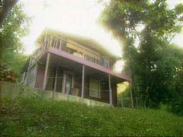
Первоначально,
по идее продюсера, альбом записывался прямо в доме на Энсенада Драйв в Лос-Анджелесе,
где квартировал Ван Влит (впрочем, там жила этакой общиной вся группа), но в
какой-то момент Дон взбунтовался и музыканты перебрались в нормальную студию.
Интересно, что находилась она не где-нибудь, а в Глендэйле - месте рождения
Ван Влита. Работа в студии заняла всего несколько часов, сведение тоже было
сделано очень быстро (при этом использовались несколько вещей из "домашних"
упражнений и две песни, записанные раньше). От первой попытки остались записи,
известные как
"Trout Mask house sessions".
Помимо Бифхарта, Хаклроуда, Марка Бостона, Френча и Джеффа Коттона в состав
группы входил бас-кларнетист Виктор Хэйден (
Victor Hayden) по прозвищу
"Маскара Снэйк" (
Mascara Snake) - родственник Ван Влита.
Как уже отмечалось выше, поначалу слушать этот
альбом нелегко. Но чем больше его прокручиваешь, тем он лучше воспринимается
и, более того, начинает жутко нравиться. Среди двадцати восьми зубодробительных
- по первому впечатлению - композиций появляются любимые, затем с удовольствием
слушается всё от начала до конца и - готово! - вы запали не только на "Trout
Mask Replica", но и вообще на музыку Бифхарта. Альбом действительно хорош. Здесь
уже окончательно сформировались особый бифхартовский драйв, благодаря которому
по-хорошему "замороченная" музыка никоим образом не скатывается к заумной нудятине,
и особый бифхартовский неистовый звук. Во всей красе его саксофон (например,
"Hair Pie: Bake 1", "Ant Man Bee"). Что за песни! Отвязная "Sugar 'N' Spikes",
"Moonlight On Vermont" с чудной гитарой, параноидальная "The Blimp", а также
"Ella Guru", "Pachuco Cadaver", та же "Ant Man Bee", "Hobo Chang Ba", "Veteran
Day's Poppy"; спетая вообще без сопровождения гипнотическая "Well", напоминающая
не то песню бурлака (или могильщика), не то отпевание в исполнении неопохмелившегося
попа. И потрясающий чёрный (чернее не бывает) деревенский блюз "China Pig":
голос Бифхарта и просто невероятная гитара того самого Дагласа Муна из первого
состава MAGIC BAND. И шизоидный инструментал "Dali's Car" (так же назовёт свой
первый сольный альбом лидер группы BAUHAUS Питер Мёрфи - интересно, почему?).
В общем, это надо слушать.
Что касается продюсерской работы Фрэнка Заппы
на этом альбоме… Какие-то эпизодические разговорчики, кое-где щелчки и эксперименты
с лентопротяжным механизмом - не думаю, что это так уж круто. Что-то, наверное,
неплохо, что-то - не очень. Главное здесь - не то, кто был продюсером, а то,
что этому продюсеру не удалось ничего испортить. Может быть, даже наоборот.
Вообще взаимоотношения Бифхарта и Заппы очень неоднозначны: дружба и соперничество,
сотрудничество и ссоры… Бифхарт периодически пел и играл на концертах и альбомах
Заппы (сразу после "Trout Mask…" он выступил в роли вокалиста на пластинке Фрэнка
"Hot Rats" - в единственной имеющейся там собственно песне "Willie The Pimp"),
а тот помогал ему как продюсер и щедро "делился" музыкантами. В то же время
Заппа иногда язвительно отзывался о своём друге; у Ван Влита порой наступали
"антизапповские настроения" - так случилось и на этот раз. По свидетельству
очевидцев, Бифхарт часами сидел, слушая "Trout Mask…", курил и поносил в интересных
выражениях работу продюсера, оформление, цвета обложки и так далее. Как бы то
ни было, этот альбом всё равно остаётся одним из самых культовых среди любителей
альтернативной музыки.
В конце восьмидесятых
"Trout Mask Replica" вышел на CD, причём его втиснули в один диск - вроде
бы без потерь.
Сразу после записи произошёл неприятный инцидент
- Бифхарт по какой-то неясной причине выставил за дверь Джона Френча. Вскоре
уходит и Джефф Коттон. Через некоторое время появляется ещё один "перебежчик"
из группы Заппы - перкуссионист Арт Трипп третий (
Art Tripp III) по прозвищу
"Эд Маримба" (
Ed Marimba).
Затем возвращается
Френч, и весной 1970 года состав относительно стабилизируется: Хаклроуд
- гитара, Марк Бостон - гитара, бас-гитара, Френч и Арт Трипп - барабаны, перкуссии.
И, конечно же, Бифхарт.
Следующую пластинку
"Lick
My Decals Off, Baby" ("Оближи мои переводные картинки, детка" - как-то
так), выпущенную в октябре 1970 года, продюсировал уже собственноручно Дон Ван
Влит. Это едва ли не первый диск Бифхарта, сделаный так, как он сам хотел и
при этом выпущенный в срок. Он представляет собой пятнадцать коротких композиций
(общая длительность около сорока минут), выдержанных в духе предыдущего альбома.
По ощущению, от "Trout Mask Replica" он отличается отсутствием всяческой околомузыкальной
шелухи, большей собранностью, цельностью, хотя, возможно, и несколько меньшим
разнообразием. Это, пожалуй, самый "минималистский" альбом MAGIC BAND - именно
к нему наиболее применимо определение "протопанк". Причём в половине вещей ведущими
инструментами являются духовые - это пик Бифхарта как саксофониста и кларнетиста.
Здесь немало его классических песен: "издевательская" "Lick My Decals…", прекрасная
и совершенно дикая "I Love You, You Big Dummy", "неотёсаный" как бы блюз "Woe-Is-Uh-Me-Bop",
задумчиво-смурноватое "The Buggy Boogie Woogie", а также "Doctor Dark", "Bellerin
Plane", "The Smithsonian Institute Blues"... Есть и несколько очень интересных
инструменталов, например, почти романтические "Peon" и "One Red Rose That I
Mean" - такого рода композиции станут ещё одним фирменным знаком коллектива.
Заключительная вещь "Flash Gordon's Ape" - просто фри-джаз какой-то; так же
можно определить и инструментал "Japan In A Dishpan". Многие поклонники
считают - и не без оснований - эту запись лучшим альбомом Бифхарта.
Это может показаться
странным, но именно "Trout Mask Replica" и "Lick My Decals Off, Baby" стали
высшими достижениями MAGIC BAND в чартах - сответственно 21-е и 20-е места
- правда, в Великобритании. В американские списки "самых популярных" пластинки
Бифхарта не попадали никогда.
Примерно с конца 1970 года в группе регулярно
появляются гитарист Эллиот Ингбер (
Elliot Ingber), он же "Уингд
Ил Фингерлинг" (
Winged Eel Fingerling) и басист Рой Эстрада (
Roy
Estrada) по прозванию "Орехон" (
Orejon) - оба также из
MOTHERS (Эстрада, кроме того, успел поиграть и в LITTLE FEAT). Ван Влит же в
скором времени женится - на некой Дженет Хак (Janet Huck). Может быть, поэтому
несколько следующих его альбомов будут менее жёсткими?
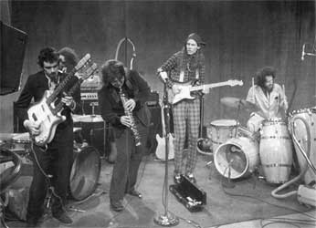
Как нетрудно догадаться, экспериментаторство
CAPTAIN BEEFHEART &
THE MAGIC BAND (в какой-то момент группа стала именоваться
так) приносило весьма скудные материальные плоды. Коллектив регулярно гастролировал,
имел свой круг поклонников, не был совсем уж забыт прессой и даже телевидением,
но…
Когда в следующем году музыканты засели в студии
для работы над очередной пластинкой, то, по воспоминаниям Джона Френча, им не
всегда хватало денег на еду. Альбом
"The
Spotlight Kid" ("Дитя в центре внимания") записывался долго
и тяжело. Продюсером снова был сам маэстро, плюс сопродюсер
Фил Шайер.
Как это нередко случалось у плодовитого Бифхарта, было записано гораздо больше
композиций, чем требовалось (
по его словам,
тридцать пять) - на вышедшем в январе 1972 года диске их было всего десять.
Зато каких! Здесь Ван Влит снова всерьёз обратился к корням своей музыки. Ядро
альбома - набор своеобразных шершавых, тяжеловатых, густых блюзов. Прекрасно
звучит всё: и гитары, и ударные, и, конечно, главные инструменты Бифхарта -
губная гармошка и голос. "I'm Gonna Booglarise You Baby", "Click Clack",
"Grow Fins", "There Ain't No Santa Claus On The Evening Stage", "Glider" - да
что там перечислять, хороши практически все песни. "The Spotlight Kid" гораздо
легче воспринимается с первого раза, чем предыдущие работы MAGIC BAND (когда
хочется нажать на кнопку "стоп" после нескольких секунд прослушивания). Большая
часть оформления пластинки (кроме лицевой стороны обложки) состояла из рисунков
и картинок Дона Ван Влита.
Именно этот диск и привлёк, наконец, внимание
достаточно широкого круга как слушателей, так и продюсеров к неординарной фигуре
Бифхарта.
В том же году MAGIC BAND был приглашён на запись
фирмой Warner Brothers/Reprise. Руководил этим процессом по-настоящему профессиональный
продюсер
Тед Темплмэн. И в ноябре вышел в свет ещё один диск "Бифхарта
с человеческим лицом" -
"Clear Spot"
("Чистое пятно" или "Светлое пятно"). Сперва, по утверждению
Ван Влита, задумывалось нечто под названием "Brown Star" ("Коричневая звезда"),
куда помимо музыки (включающей песню Джен Ван Влит - супруги - "Happy Blue
Pumpkin") должны были войти чтение стихов и интервью. "Brown Star" - ещё
один источник споров и мифов... "Clear Spot" напоминает по звучанию предыдущую
пластинку, но имеет менее акцентированную блюзовую составляющую. Пожалуй, ему
немного не хватает шероховатости и "увесистости" "The Spotlight Kid" (может
быть, сказалось отсутствие Джона Френча?), но в целом это хороший альбом с изрядным
количеством "ударных" вещей. Это выдающаяся "Low Yo Yo Stuff", драйвовая "Circumstances",
практически танцевальная "Long Neck Bottle", "Sun Zoom Spark", "Big Eyed Beans
From Venus" с замечательной гитарой Билла Хаклроуда. При записи некоторых композиций
использовались духовая секция и женский бэк-вокал, которого не бывало на пластинках
MAGIC BAND со времён "Safe As Milk". То же самое можно сказать о мелодичных,
почти лирических песнях "Too Much Time", "My Head Is My Only House Unless It
Rains", "Her Eyes Are A Blue Million Miles"… Презентация диска сопровождалась
выставкой живописных и графических работ Ван Влита.
В формате CD альбомы
"The Spotlight Kid" и "Clear Spot" выпущены на одном диске, что вполне справедливо,
а главное - удобно для покупателя. Рекомендую.
Но не всё было таким радужным. На горизонте
группы и её лидера, простите за банальность, уже сгущались тучи.
В
конце 1973 года музыканты начали работать над песнями для очередной пластинки.
Бифхартом же всё сильнее овладевала мысль выпустить коммерческий альбом (не
было ли это одним из "влияний" Фрэнка Заппы?), каковой и вышел в свет весной
1974 года под названием
"Unconditionally
Guaranteed" ("Безоговорочно гарантировано"). Продюсером был некто
Энди
ДиМартино. В записи, помимо нескольких достаточно случайных музыкантов,
участвовали и Хаклроуд, и Бостон, и Трипп, и даже Алекс Снуффер - в это трудно
поверить, когда слышишь результат… Не дожидаясь сведения альбома ушёл Билл Хаклроуд:
"Я больше не желаю быть частью всего этого…" (его высказывания "обо всём этом"
содержат немало труднопереводимых выражений типа "fuck" и "bullshit"). Вслед
за ним покинули Бифхарта и все остальные… Бостон, Арт Трипп и тот же Хаклроуд
с приглашённым вокалистом образовали группу MALLARD и даже записали в дальнейшем
пару альбомов. Спустя годы некоторые участники раннего MAGIC BAND возобновят
сотрудничество с Бифхартом. Печально, что этого никогда больше не сделают мистер
Зут Хорн Ролло и мистер Рокет Мортон - Хаклроуд и Бостон, составлявшие "гитарную
основу" группы в течение пяти (и каких!) лет.
Ван Влит в спешном порядке
набрал других музыкантов и отправился с ними в концертное турне - под старой
маркой CAPTAIN BEEFHEART & THE MAGIC BAND. Поклонники и журналисты с горькой
иронией окрестили новый состав "TRAGIC BAND" (для перевода можно было бы срифмовать
"волшебный - ущербный", что, пожалуй, лучше отражает ситуацию). С этой компанией
(и опять с продюсером ДиМартино) была записана и следующая пластинка
"Bluejeans
& Moonbeams" ("Синие джинсы и лунные лучи") (вышла в ноябре
1974 года).
Эти два альбома почти единодушно признаются
худшими работами Бифхарта. Сюда же можно отнести и концертный диск
"London
1974" (выпущен в 1994 году). Большинство песен представляют собой "приэстрадненные"
блюзы и даже баллады, по звучанию иногда напоминающие последние пластинки Дженис
Джоплин - только энергетики поменьше. Справедливости ради стоит заметить, что
подобные сентиментальные, почти на грани мелодраматизма вещи изредка уже проскальзывали
на записях MAGIC BAND - например, "I'm Glad" с первой пластинки, "Too Much Time"
и "My Head Is My Only House…" с "Clear Spot" - но звучали они, всё-таки, пооригинальнее
и не были определяющими, а лишь вносили дополнительное разнообразие… Особого
коммерческого успеха не получилось - альбом "Unconditionally Guaranteed" занял
в США только 192-е место. Бифхарт сперва бодрился, говорил, что всё идёт хорошо.
"Другое было другим, а это есть это. Мне нравилось то, что было, - нравится
и это". Однако уже октябре 75-го он скажет в интервью: "…затем была ужасная
вещь под названием "Unconditionally Guaranteed", и ещё - "Bluejeans & Moonbeams"…
Мне действительно хотелось бы попросить тех, кто купил эти альбомы, сдать их
обратно в магазины и попытаться вернуть свои деньги… Это были наихудшие годы
в моей жизни".
В принципе, если смотреть с позиций "нормального"
слушателя, песни эти не так уж плохи. Бифхарт подтвердил, что он умеет писать
хорошие мелодии: "Upon My-O-My", "Magic Be", "New Electric Ride" и трогательная
"This Is The Day" c "Unconditionally…"; "Observatory Crest", "Further Then We've
Gone" (подобные фортепианные ходы можно услышать на альбомах Ника Кейва конца
восьмидесятых), "Bluejeans And Moonbeams" со следующего альбома… Кроме того,
на последнем есть и достаточно интересная "Pompadour Swamp", и слегка напоминающая
ранний MAGIC BAND "Party Of Special Things To Do", и проникновенная версия песни
Джей Джей
Кейла "Same Old Blues". Но - что положено Юпитеру, не положено Бычьему
Сердцу. Эти альбомы не дают никакого представления о творчестве Бифхарта в целом.
Их можно ставить для разнообразия, для контраста, для фона - но, как ни крути,
Ван Влит тут сел - не в лужу, нет - не в свои сани.
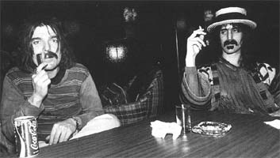
Многие слушатели и критики практически "похоронили"
Бифхарта. Но не тут-то было. Сначала, расставшись с "TRAGIC BAND", он уехал
в свою любимую пустыню Мохави (именно в пустыню), где жил в трейлере, писал
и рисовал. Это, кстати, было его обычным времяпрепровождением в отсутствие гастролей
и студийной работы. Затем выступил вместе с группой MALLARD - получилось что-то
вроде скромного юбилея MAGIC BAND.
В очередной раз помирился
с Заппой, с ним и группой MOTHERS записал в студии несколько вещей. Позже,
в 1975 году, две из них войдут в совместный концертный альбом
"Bongo
Fury" (переводится, видимо, как "Ярость бонго"; бонго (бонги)
- разновидность барабана, "перкашн"). Здесь Ван Влит играет на губной
гармонике, подпевает и просто поёт в половине песен, из которых две - его (их
трудно назвать песнями; скорее, это какие-то заклинания в какофоническом сопровождении
- чем-то похоже на "Celebration Of The Lizard" или "Horse Latitudes" группы
THE DOORS. Впечатляет).
Где-то на рубеже 1974-75 годов
Бифхарт встречается с Джоном "Драмбо" Френчем и уговаривает того поработать
с ним.
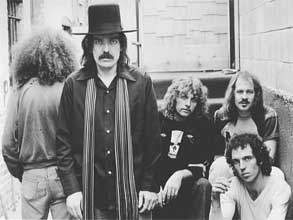
Возвращается
также гитарист Эллиот Ингбер, из MOTHERS приходит к Бифхарту тромбонист Брюс
Фаулер (
Bruce Fowler), иногда присоединяется знакомый Ван Влита и большой
поклонник MAGIC BAND гитарист Джефф Морис Теппер (
Jeff Moris Tepper).
Появляются и другие музыканты. В результате весной 1976 года группа в составе
Ван Влита, Френча, Теппера, а также клавишника Джона Томаса (
John Thomas)
и гитариста Денни Уолли (
Denny Walley, тоже экс-MOTHERS) засела в студии
для записи альбома. Продюсировать его собирались сам Бифхарт и
Херб Коэн
- менеджер Фрэнка Заппы. Итогом стал "великий нереализованный альбом"
"Bat
Chain Puller" ("Тянущий цепь летучих мышей"?..) - из-за разногласий
между Заппой и Коэном оригинал этой записи так и не увидел свет. Фрэнк подал
на Коэна в суд (так как тот вроде бы тратил его деньги на оплату студии для
Бифхарта) и выиграл этот процесс - а вместе с ним и права на пластинку, издавать
которую не стал. На этом "очень неоднозначные взаимоотношения" друзей-соперников
фактически прекратились... В наши дни, по слухам, уже сам Ван Влит не даёт разрешения
на выпуск альбома - в пику наследникам Заппы. Непонятно как попавшая "в люди",
эта запись ходит среди поклонников на правах бутлега.
Несмотря ни на что, в
1978 году выходит диск
"Shiny Beast (Bat
Chain Puller)" ("Сияющий зверь..."), включающий в себя большое количество
композиций (заново записаных) с "Original Bat Chain Puller". Вообще же вещи
с той сессии вошли во все последующие пластинки (их было три) CAPTAIN BEEFHEART
& THE MAGIC BAND.
В записи "Shiny Beast…" уже не принимал участия
Джон Френч - его заменил Роберт Артур Уильямс (Robert Arthur Williams)
- барабанщик с интересным прозвищем "Wait For Me" (т.е. "Подожди Меня").
Помимо Брюса Фаулера и Джеффа Теппера привлечены были также басист-клавишник
Эрик Дрю Фельдман (Eric Drew Feldman) и гитарист Ричард Ридас (Richard
Redus), помогал здесь и старый знакомый Арт Трипп. Продюсерами были Бифхарт
и Пит Джонсон. Оформление этой пластинки (как и всех последующих) - целиком
дело рук Ван Влита. Что можно сказать об этом альбоме? Только одно - это великолепное
возвращение маэстро Бифхарта "на круги своя". В отличие от лучших ранних работ
"Shiny Beast…" несколько мягче, мелодичнее - но это не "TRAGIC BAND". Использовано
больше духовых, различных перкуссий, клавишных, даже аккордеон - в итоге чувствуется
некоторая примесь "нормального" джаза и латиноамериканской музыки - конечно,
в бифхартовском преломлении. Здесь есть и жёсткие песни: "You Know You're A
Man", "Bat Chain Puller", но основа альбома - композиции с хорошими и интересно
построенными мелодиями, в которых сквозит этакая, вроде бы несвойственная Бифхарту
затаённая грусть. Назову лишь некоторые: "Ice Rose", "When I See Mommy I Feel
Like A Mummy" и прекрасную, прямо-таки трагическую "Love Lies". Это настроение
ощущается даже в таких совсем не лирических вещах, как "Floppy Boot Stomp",
"Owed T'Alex" и других. В общем, хорош и разнообразен весь альбом. Его можно
порекомендовать как искушённым поклонникам, так и тем, кто впервые знакомится
с творчеством Бифхарта.
В том же году Ван Влит записывает песню
Джека
Ницше "Hard Workin' Man" для фильма Пола Шредера "Синий воротничок" ("Blue
Collar"). "Подбил" его на это - и участвовал в записи - не кто иной, как Рай
Кудер. Режиссёру требовался человек, который мог бы спеть, как Хаулин Вулф.
"Я знаю такого человека," - сказал Кудер и уговорил (хоть и не сразу) Бифхарта
попробовать. Кстати говоря, в этом фильме звучит и "Wang Dang Doodle" в исполнении
самого Вулфа. Вообще CAPTAIN BEEFHEART & THE MAGIC BAND не были так уж обижены
киношниками и телевизионщиками - сохранились съёмки концертов, документальные
фильмы о группе, ролики к песням. Но на саундтреках к игровым фильмам Бифхарт
был замечен лишь дважды: в упомянутом "Синем воротничке" и в комедии братьев
Коэнов "Большой Лебовски" ("Big Lebowski") - песня "Her Eyes Are A Blue Million
Miles" с альбома "Clear Spot".
В ноябре 1978 года MAGIC
BAND даёт в Нью-Йорке концерт, запись которого потом многократно выходила под
разными наименованиями на бутлегах. В 2000 году она, наконец, издана официально
под названием
"I'm Going To Do What I
Wanna Do (Live At My Father's Place 1978)", правда, тиражом лишь в 5000
штук. Более доступен другой концертный диск Бифхарта -
"Merseytrout
(Live In Liverpool 1980)"; только не совсем понятно - действительно это
официальное издание или всё-таки бутлег?..
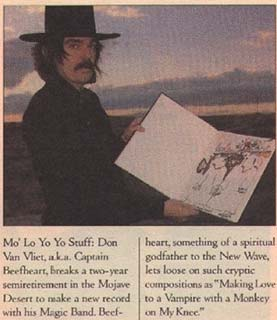
Спустя
два года выходит пластинка
"Doc At
The Radar Station" ("Доктор на радарной станции") - одна из
самых интересных работ CAPTAIN BEEFHEART & THE MAGIC BAND за всю историю их
существования. Бифхарт как будто сбросил десяток лет - альбом сделан в лучших
традициях "Trout Mask…" и "Lick My Decals…", со всеми фирменными "трюками" -
но и, подобно "Shiny Beast…", с большим разнообразием. Состав музыкантов был
почти таким же, как при записи предыдущего альбома, только Арта Триппа III сменил
Джон Френч (здесь он играет не только на барабанах, но и на гитаре!) и присоединился
давний поклонник Бифхарта Гэри Лукас (
Gary Lucas), которого очень интересовала
манера игры многочисленных гитаристов MAGIC BAND. "…Я сидел дома, слушал запись
и думал - как это у него получается? Звучит так, будто две гитары играют одновременно;
но я знал, что это делает один человек… Они используют все пальцы правой руки
для атаки. Это здорово, потому что вы… получаете мелодию, ритм и бас одновременно…
Я просто заставил себя сесть и научиться этому… После прослушивания "Flavor
Bud Living" (инструментала с "Doc At The Radar Station") меня спросили: партию
какой гитары ты играешь - той, что выше, или той, что ниже? Я ответил: всё играл
я - вживую, без наложений". Лукас стал и менеджером группы. Продюсировал этот
альбом, как и следующий, сам-один Дон Ван Влит. Если "Hot Head", "Ashtray Heart",
"Run Paint Run Run" сделаны немного в духе "боевых" вещей с "Shiny Beast…" -
только ещё жёстче, то дальше начинается коронный, замечательный бифхартовский
беспредел: "Dirty Blue Gene", "Best Batch Yet", "Telephone", "Sherif Of Hong
Kong"… А также вообще ни на что не похожие "Sue Egypt" с загадочной флейтой
(или меллотроном?) и "Making Love To A Vampire With A Monkey On My Knee" (довольно
характерное для Бифхарта название) с какими-то "бешенно-готическими" органными
вставками. Практически любая из двенадцати композиций - MAGIC BAND высшей пробы.
В конце 1980-го группа отправилась в свой,
как вскоре выяснилось, последний гастрольный тур. 15-го января (уже следующего
года) в Сиэттле состоялся концерт, известный как
"Don's
Birthday Party" - Капитану исполнилось сорок лет. Его запись не входит в
официальную дискографию CAPTAIN BEEFHEART & THE MAGIC BAND, это бутлег, но очень
интересный - прекрасный и качественно записанный материал. В 1994 году он вышел
на CD, почему-то в Люксембурге.
Затем, после некоторого
затишья, Бифхарт решил записать ещё один альбом. И летом 1982 года вновь
видоизменённый MAGIC BAND взялся за работу над пластинкой
"Ice
Cream For Crow" ("Мороженое для вороны"). Кроме "самого", Гэри Лукаса,
Джеффа Теппера и эпизодически Эрика Фельдмана принимали участие также басист
Ричард Снайдер (
Richard Snyder), игравший с группой на последних концертах,
и новый барабанщик Клифф Мартинес (
Cliff Martinez). Мартинес вспоминает
(о том, как его пригласили на прослушивание): "Я не спал три дня… Для меня
это было всё равно, что работать с Майлзом Дэвисом или Джими Хендриксом… Это
был один из моих идолов".
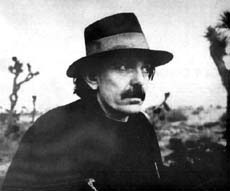
Диск
вышел в сентябре 1982 года. Он получился достаточно пёстрым. Это, наверное,
единственная работа MAGIC BAND, которая не воспринимается как цельный, с присущим
ему одному звучанием альбом. "Ice Cream For Crow" ("I scream"? - "я
кричу"?), этакий беззаботный (но очень интересный) инструментал "Semi-Multicoloured
Caucasian" и "The Past Sure Is Tense" навевают воспоминания о "Safe As Milk"
и "Clear Spot"; "The Host The Ghost The Most Holy-O", "The Witch Doctor Life"
сделаны, пожалуй, в духе "Shiny Beast…"; хватает и классически "по-бифхартовски"
звучащих композиций: "Cardboard Cutout Sundown", "Ink Mathematics" и другие.
Настоящим украшением пластинки является непонятно-завораживающая "The 1010th
Day Of Human Totem Pole". Заканчивается альбом леденящей кровь вещью "Sceleton
Makes Good"; несколько затихающих странных позвякиваний - и всё... Вероятно,
из трёх последних альбомов Бифхарта "Ice Cream For Crow" не самый лучший, но
он, безусловно, интересен и является вполне достойным завершением яркой и достаточно
долгой музыкальной карьеры. После записи в студии группа выехала в пустыню Мохави,
где среди песков и кактусов был снят ролик "Ice Cream For Crow". Причём, и здесь
командовал парадом, то есть съёмками… - впрочем, вы и сами догадались, кто.
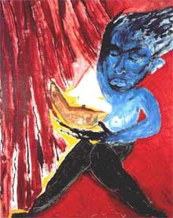
Вскоре
после выхода альбома Дон Ван Влит отрекается от прозвища Кэптэн Бифхарт и навсегда
уходит из музыки, чтобы полностью посвятить себя своей второй страсти - живописи.
Он снова сел в свой трейлер и уехал в Аризону, в любимые им пустынные края.
"Сейчас я хочу только рисовать. Я ненавижу музыкальный бизнес". Живопись Ван
Влита под стать его музыке. Интересно, что на "новом" поприще он достиг гораздо
большего коммерческого успеха: цены на многие его работы достигают нескольких
тысяч долларов. Начиная с 1985 года и по сию пору в европейских и американских
галереях регулярно проходят выставки его картин (включая и работы шестидесятых-семидесятых
годов).
Сам же Ван Влит с начала девяностых почти не
показывается на людях. Он страдает обширным склерозом, живёт в пустыне на берегу
океана, рисует и поигрывает на саксофоне для китов, которых, как он утверждает,
иногда видит в заливе. "Они поют, а я им играю"… Ван Влит и сейчас окружён мифами
- согласно одному из них, творчество таинственной группы THE RESIDENTS не обходится
без его участия.
Музыкальное наследие Бифхарта, тем не менее,
продолжает расти. Помимо переизданий двенадцати его студийных альбомов, различных
сборников, бутлегов, в конце девяностых вышли ещё две интересных подборки:
пятидисковый "бокс-сет"
"Grow Fins
rarities 1965-1982", включающий в себя вещи с "Trout Mask house sessions",
концертные и демо-записи и прочее, а также весьма достойная антология MAGIC
BAND на двух CD
"The Dust Blows Forward",
тоже содержащая несколько раритетов. Правда, пока всё это только "у них"…
Многие бывшие участники MAGIC BAND активно
музицировали и после 1982 года. Немало сольных дисков выпустил гитарист Гэри
Лукас. Басист-клавишник Эрик Дрю Фельдман работал с PIXIES и их экс-лидером
Фрэнком Блэком, с Пи Джей Харви, а также был замечен в составе PERE UBU. Барабанщик
Клифф Мартинес поиграл в группе RED HOT CHILI PEPPERS. Записывались Джон Френч,
Брюс Фаулер и другие. Гитарист Джефф Морис Теппер работал с неординарным музыкантом
Робином Хичкоком, а также участвовал в записи альбома Тома Уэйтса "Frank's
Wild Years" (1987 год). Интересно кстати, что начиная со "Swordfishtrombones"
1983 года (т.е. почти сразу после ухода Ван Влита со сцены), Уэйтс стал делать
гораздо более радикальную и неоднозначную музыку, нежели раньше. Он словно
принял эстафету - и, надо сказать, очень достойно. Но это, как говорится,
уже совсем другая история.
Здесь мы не касаемся такого вопроса, как поэзия
Бифхарта, - помимо песен он писал стихи и поэмы - это отдельная тема. Можно
только отметить, что его тексты содержат много "блюзового" слэнга - это отнюдь
не литературный английский; что его образы и выражения непонятны подчас и тем,
для кого английский - родной язык. Чего стоят одни названия некоторых композиций:
"Making Love To A Vampire With A Monkey On My Knee" ("Занимаясь любовью с вампиром
с обезьяной на моём колене"), "I Wanna Find A Woman That'll Hold My Big Toe
Till I Have To Go" ("Я хочу найти женщину, которая будет держать меня за большой
палец ноги, пока я не уйду"), "My Head Is My Only House Unless It Rains" ("Моя
голова - мой единственный дом, когда не идёт дождь"), "A Carrot Is As Close
As A Rabbit Gets To A Diamond" (нет, я всё-таки не переводчик)… "Вероятно, одна
из главных причин, почему я стал поэтом, заключалась в том, что я не мог воспринимать
английский язык таким, каким он был. И я его изменил," - ну как тут не вспомнить
Велимира Хлебникова… Тексты Ван Влита называли и сюрреалистическими, и абсурдистскими,
и дадаистскими; говорили также, что они словно сошли со страниц детской книжки.
В
энциклопедии "Британника" сказано: "Его песни выражали глубокое недоверие
современной цивилизации, стремление к экологическому равновесию и уверенность
в том, что дикие животные гораздо совершеннее человеческих существ". Ну что
ж, наверное, им виднее…
Если вы уверены, что THE BEATLES - лучшая группа
всех времён и народов, что вершина концептуализма это "Dark Side Of The Moon",
что панк придумали SEX PISTOLS, что лучше всех играет блюз Эрик Клэптон, а Гэри
Мур играет блюз - боюсь, вы зря потратили время, читая эти заметки. Но если
вдруг вас привлекают Том Уэйтс (особенно поздний), или "некоммерческий" Фрэнк
Заппа, или ранний VELVET UNDERGROUND, или ранний же Ник Кейв (включая BIRTHDAY
PARTY); если вам нравятся PINK FLOYD времён Сида Барретта, "рок-н-ролльный"
CAN образца "Ege Bamyasi" или "Delay…", если вы любите блюз
Джона
Ли Хукера, Хаулина Вулфа, Мадди Уотерса,
Скримин
Джей Хоукинса и их предшественников, если вас интересуют эксперименты
Джими Хендрикса или, скажем, "выкрутасы" THE DOORS, а также вы неравнодушны
к разным THE RESIDENTS, SONIC YOUTH, Диаманде Галас, Пи Джей Харви… - перечислять
можно очень долго; в этот же список я бы добавил Петра Мамонова (послушайте
его "Жизнь амфибий..."; мамоновское высказывание: "Приходится всё время
ребёнком жить, и все так, и Бифхарт так же…"), опыты Леонида Фёдорова и ВОЛКОВТРИО,
возможно, Фёдора Чистякова, ХИМЕРУ, НЕ ЖДАЛИ… Если хоть что-нибудь из этого
и ему подобного вы слушаете - тогда, очень может быть, Бифхарт - "ваш" музыкант.
Попробуйте. Правда, есть тут одна опасность. Сразу после того, как основательно
его наслушаешься, почти любая другая музыка может "не пойти". Может показаться
слишком правильной, пресной и скучной. Впрочем, кому как. Кто-то выбирает пепси,
кто-то - кофеин, а некоторые предпочитают водку. Бифхарт - это самогон. Если
не чистый спирт (spiritus?), а то и пейотль какой-нибудь - благо Мексика рядом.
Будьте осторожны…
Ещё два-три года назад многие продавцы даже
"продвинутых" музыкальных магазинов о нём понятия не имели - теперь ситуация
меняется к лучшему. У нас уже выпущены на CD (т.н. "лицензионных")
такие перлы, как
"Trout Mask Replica",
"The Mirror Man Sessions",
"The Spotlight Kid"/"Clear Spot",
"Shiny Beast (Bat Chain Puller)",
а также концертник
"Bongo Fury" (Заппа/Бифхарт/MOTHERS). Попадался в
своё время видимо совсем пиратский диск
"Safe As Milk" - с оригинальной
версией, т.е. без бонус-треков. Вышли даже, как ни странно, не самые лучшие
альбомы
"Unconditionally Guaranteed" и
"Bluejeans & Moonbeams",
и несколько невразумительный сборник
"A
Carrot Is As Close As A Rabbit Gets To A Diamond" (он охватывает период
1974-82 годов, т.е. за бортом остался первый, самый интересный этап творчества
Бифхарта; почти половина материала - композиции всё с тех же дисков разнесчастного
1974 года). Может быть, мы дождёмся и "Strictly Personal", "Lick My Decals Off,
Baby", "Doc At The Radar Station"?.. А почему бы и нет?
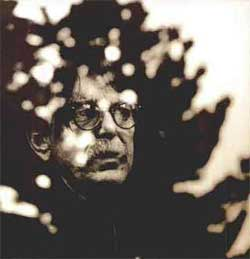
Конечно,
его творчество может нравиться или не нравиться. Но очевидно одно: Бифхарта
не спутаешь ни с кем. Как музыкант, он прошёл через шестидесятые, семидесятые
и даже заглянул в восьмидесятые. И, похоже, его мало трогала суета, кипевшая
вокруг - молодёжные "бунты", всяческие "волны" и прочие веяния времён. Он
мог позволить себе исполнять чёрный блюз в разгар "битломании", в период расцвета
психоделии записывать дикие, фактически "панковские" альбомы, выпустить мелодичный
и полифоничный, с ароматом латиноамериканского джаза "Shiny Beast…" как раз
тогда, когда этот самый панк стал популярен. И всё это, как мне кажется, не
из чувства противоречия, а просто потому, что Бифхарт - это Бифхарт, и никто
иной. Он - "человек в себе". Такое ощущение, что даже появление "Unconditionally…"
и "Bluejeans…" обусловлено, скорее, какими-то его внутренними причинами, нежели
только желанием заработать побольше денег… Никак не могу забыть возмущённую
фразу одного журналиста (о только что вышедшем тогда "Boatman's Call" Ника
Кейва): "В то время, как другие осваивают трип-хоп и джангл, он записывает
альбом с печальными балладами". Остаётся только порадоваться, что во все времена
находятся люди, которые живут и творят так, как им - каждому из них - Бог
на душу положит. А не так, как пресловутые "другие" (иначе, кто бы тогда придумал
те же "трип-хоп и джангл"?). По-моему, такие люди и называются художниками
- или я не прав?.. Человек в зеркале делает всё так же, как и тот, кто находится
по эту "сторону зеркального стекла". Точно так же - только наоборот.
Автор статьи выражает благодарность Михаилу
Шарову, не без помощи которого он и смог году эдак в девяносто втором услышать
Капитана и его поистине Волшебный оркестр, а также Валерию Климову, активно
поддержавшему его (автора) ненормальное увлечение этой ненормальной музыкой
уже в конце девяностых.
2001-2002 гг.
- ВСТУПЛЕНИЕ. Вундеркинд. Мохави. Заппа. 1964-66: образование
MAGIC BAND, синглы.
- 1967-68: "Safe As Milk", "The Mirror Man [Brown
Wrapper] sessions", "Strictly Personal".
- 1969-70: "Trout Mask Replica", "Lick My Decals
Off, Baby".
- 1971-74: "The Spotlight Kid", "Clear Spot",
"Unconditionally Guaranteed", "Bluejeans And Moonbeams".
- 1975-80: "Bongo Fury", "original Bat Chain
Puller", "Shiny Beast (B.C.P.)", "Doc At The Radar Station".
- 1981-82: "Ice Cream For Crow". Живописец. ЗАКЛЮЧЕНИЕ.


©К.Узник (ссылка на РОСтБИФ и его автора при
использовании данных материалов одобряется)